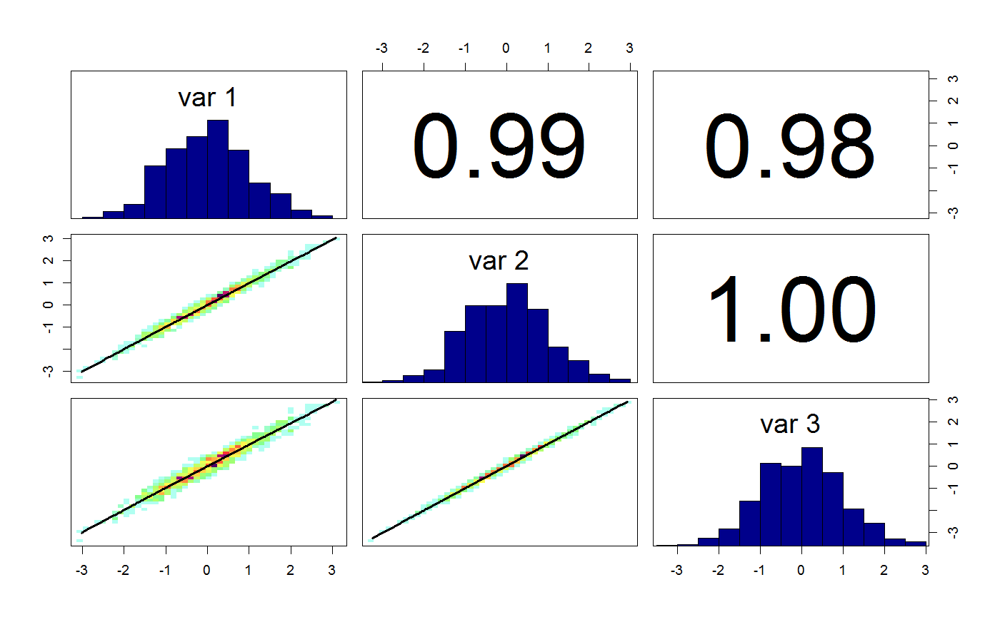
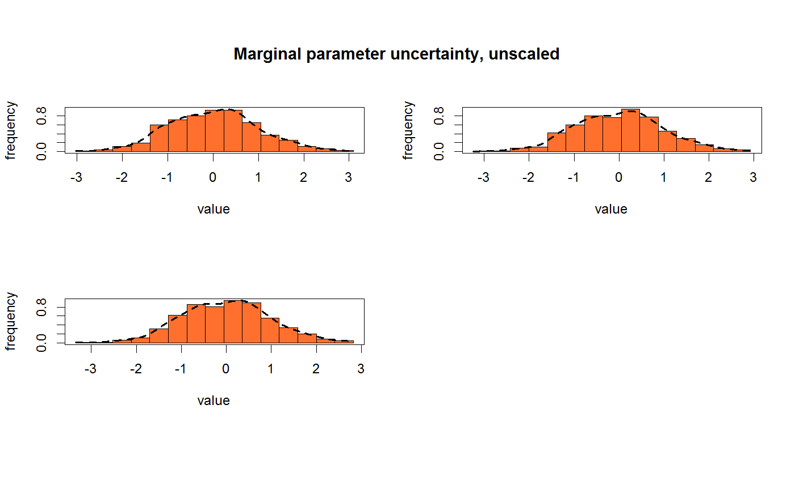

Generates a 3 dimensional multivariate normal likelihood function.
generateTestDensityMultiNormal(mean = c(0, 0, 0), sigma = "strongcorrelation", sample = F, n = 1, throwErrors = -1)
| mean | vector with the three mean values of the distribution |
|---|---|
| sigma | either a correlation matrix, or "strongcorrelation", or "no correlation" |
| sample | should the function create samples |
| n | number of samples to create |
| throwErrors | parameter for test purpose. Between 0 and 1 for proportion of errors |
3-d multivariate normal density function with mean 2,4,0 and either strong correlation (default), or no correlation.
testDensityBanana
testLinearModel
# sampling from the test function x = generateTestDensityMultiNormal(sample = TRUE, n = 1000)(1000) correlationPlot(x)marginalPlot(x)#> Warning: Parameter 'mat' is not of class 'bayesianOutput', set plotPrior to FALSE.# generating the the density density = generateTestDensityMultiNormal(sample = FALSE) density(x[1,])#> [1] 0.2472597